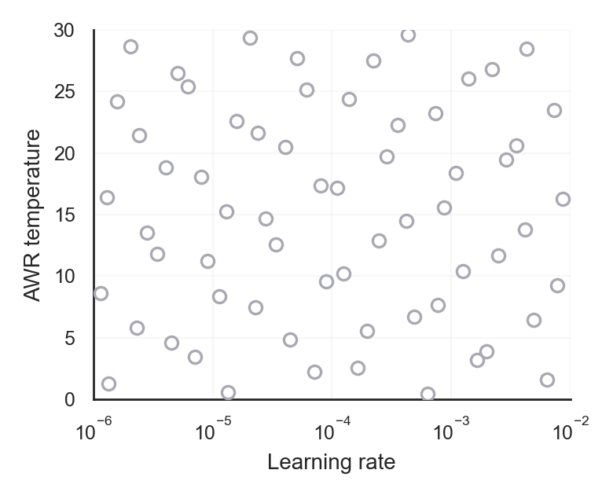
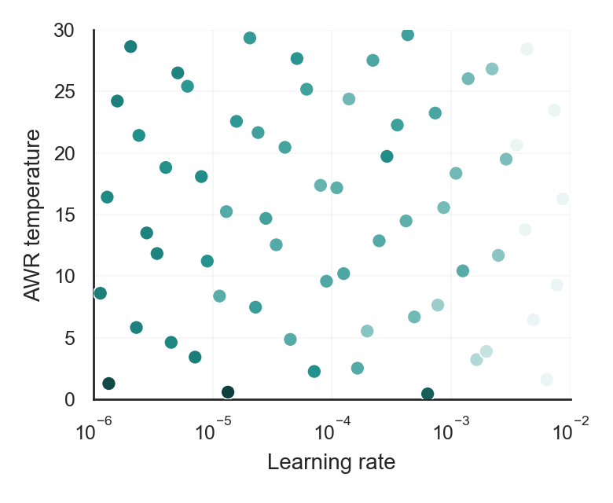
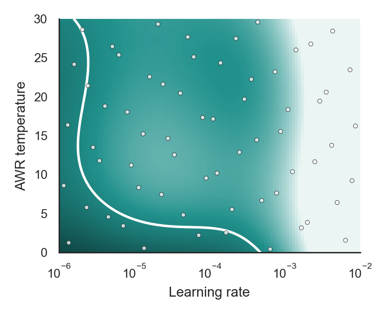
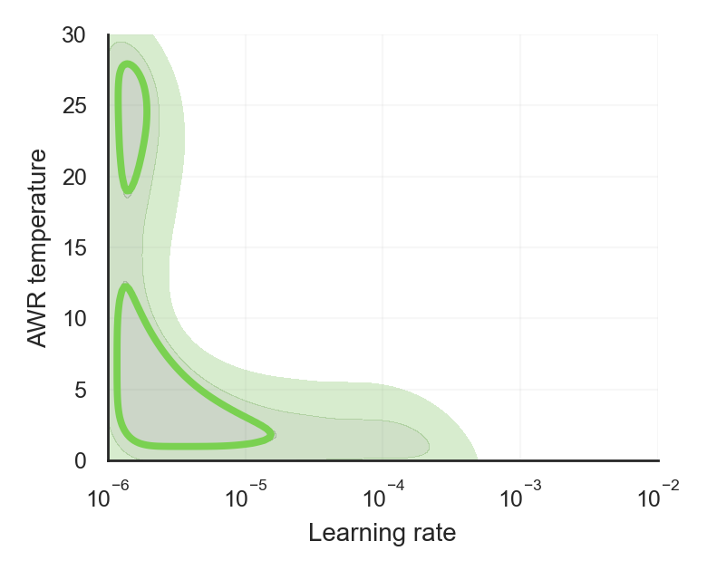

Beyond Success Rates: Trainability and Extractability for Offline GCRL
Beyond Success Rates is a study of how hard it is to find hyperparameters that make an offline goal-conditioned RL method work, which a best tuned success rate does not show.
What is a hyperparameter landscape?
RL results can depend heavily on hyperparameters, but papers usually show only the result for the best setting. A hyperparameter landscape shows the other settings too. If we train an agent with a hyperparameter configuration $\lambda$ and measure its performance, we get a single value $f(\lambda)$, and if we do this for many configurations, we get a surface $f$ over the hyperparameter space. This surface is the landscape.
Benchmark tables report the maximum of this surface, $\max_\lambda f(\lambda)$, which says nothing about its shape. The sketch below shows two methods with the same maximum. Method A works only in a small range of hyperparameters, and Method B works in a wide range, so Method B should be much easier to use on a new problem, even though a benchmark table would give them the same score.
Landscapes also change during training, since a learning rate that works well early on may not work as well later. For this reason, we measure a separate landscape $f_t$ at several points during training.
How do we build a landscape?
We want to compare what different offline goal-conditioned RL methods learn, so we use the same policy extraction method for all of them. This method is advantage-weighted regression (AWR), which trains the actor with weighted behavioral cloning, where each transition has weight $w = \min\{e^{\alpha A},\, w_{\max}\}$. The four methods differ in the advantage $A$ that they pass to AWR:
| Method | Advantage $A(s,a,g)$ | Meaning |
|---|---|---|
| GCIQL | $Q(s,a,g)-V(s,g)$ | Action value above the state-goal baseline |
| GCIVL | $V(s',g)-V(s,g)$ | One-step value progress |
| QRL | $d_\phi(s,g)-d_\phi(s',g)$ | One-step distance reduction |
| CRL | $f_\theta(s,a,g)-f_\theta^V(s,g)$ | Action-conditioned reachability increase |
We sweep two hyperparameters that all four methods share: the learning rate $\eta$, which affects both value learning and the actor, and the AWR temperature $\alpha$, which controls how selectively the actor imitates high-advantage transitions. The figures below show each step of the process for GCIQL on AntMaze-M in the final phase.




We repeat this process over four training phases. At the end of each phase, we evaluate all 64 configurations, and the next phase starts from the checkpoint of the best one. This means that only phase 1 trains from scratch, and phases 2 to 4 show how well each configuration fine-tunes a shared checkpoint. Hence, the animation should not be read as the learning curve of a single policy.
In total, this study uses:
- 4 offline goal-conditioned RL methods (GCIQL, GCIVL, QRL, and CRL) with a shared AWR extractor.
- 4 OGBench tasks:
antmaze-medium-navigate,antmaze-large-navigate,cube-single-play, andscene-play. - 64 configurations, 5 seeds, and 4 phases for each method and task, which gives 20,480 evaluations.
- About 10,000 GPU-hours for the main study, and about 31,500 more for the controls with other extractors, critics, and datasets.
What do we find?
Peak success and breadth
On AntMaze-M, GCIQL and GCIVL have similar peak success rates (0.70 and 0.74). However, only 3 of GCIQL's 64 configurations reach a success rate of 0.5, whereas 47 of GCIVL's do. Each dot below is one configuration.
GCIQL peak 0.70, 3 of 64 at 0.5 or above
GCIVL peak 0.74, 47 of 64 at 0.5 or above
antmaze-medium-navigate-v0, from the raw evaluations with no smoothing. This is only one pair of methods on one task. For example, GCIQL has a higher peak than GCIVL on Scene (0.87 and 0.73).
All 64 configurations as a table
Relative and absolute breadth
We report two measures of breadth. $\rho_\varepsilon$ is the fraction of configurations that reach a fraction $\varepsilon$ of the method's best success rate, and $\rho_{\mathrm{abs}}(c)$ is the fraction that reach a success rate of $c$. We need both because a method's best can itself be low. For example, CRL on Scene has $\rho_{0.8}=0.25$, but since its peak is only 0.19, none of its configurations reach a success rate of 0.25.
Breadth for all methods and tasks
| Task / method | Max | Mean | $\rho_{0.9}$ | $\rho_{0.8}$ | $\rho_{\mathrm{abs}}(0.25)$ | $\rho_{\mathrm{abs}}(0.5)$ |
|---|
Diagnostics
Landscapes are expensive to build, so we also compute cheaper diagnostics from trained checkpoints, such as whether the advantage scores a future goal from the same trajectory above random goals. On AntMaze, where goals are positions and future goals line up with physical progress, these diagnostics distinguish the landscape regimes. For GCIQL, the future goal scores below random goals on average (gap $-0.102$ on AntMaze-M), which is consistent with its narrow near-peak landscape.
Cube and Scene behave differently, since a transition can prepare a grasp before the object moves any closer to the goal. On Scene, GCIQL reaches a success rate of 0.87 even though it ranks future goals below random goals (FR-AUC 0.411), and QRL ranks goals well (MRR 0.115) but only reaches 0.22. These are correlations, and we do not claim that they explain the results causally.
Diagnostics for all methods and tasks
FR-AUC is how often the future goal scores above a random goal, Gap is the mean score difference, and MRR is the mean reciprocal rank of the future goal among 256 goals (about 0.024 for a random ranking).
| Task / method | FR-AUC | Gap | MRR | Max success |
|---|
Other extractors
Since all of these results use AWR, we also tested other setups. GCIQL's landscape stays narrow near its peak with DDPG+BC, with frozen critics, and with uninterrupted training, and configuration orderings on navigation tasks mostly stay the same when we change action selection or critic settings. However, absolute performance changes, and so do some breadth results: for example, QRL's $\rho_{0.9}$ drops from 0.59 to 0.02 with DDPG+BC. Hence, our claims are specific to the extractor that we measured them with.
AWR and DDPG+BC
Each cell uses 64 configurations and 5 seeds. Budget is the training budget of DDPG+BC relative to AWR. We do not run DDPG+BC with GCIVL, since GCIVL has no action-conditioned critic.
| AntMaze-M | Cube | ||||||||
|---|---|---|---|---|---|---|---|---|---|
| Method | Extractor | Max | $\rho_{0.9}$ | $\rho_{\mathrm{abs}}(0.25)$ | Budget | Max | $\rho_{0.9}$ | $\rho_{\mathrm{abs}}(0.25)$ | Budget |
What should we report?
We recommend that offline goal-conditioned RL papers report success rates along with relative and absolute breadth, diagnostics of the learned signal, and the extractor used to measure them.
Our study has limitations. Our evidence is correlational, the main study uses a single flat extractor, and we do not cover hierarchical methods such as HIQL, action chunking, test-time planning, or longer-horizon and humanoid tasks. Do the same patterns hold for these methods and tasks? We hope that future work will answer this question, and that our code makes it easier to build landscapes for new methods!
Citation
@inproceedings{toepperwien2026beyond,
title = {Beyond Success Rates: Trainability and Extractability for Offline GCRL},
author = {T{\"o}pperwien, Jan Malte and Mohan, Aditya and Lindauer, Marius},
booktitle = {The Fortieth Annual Conference on Neural Information Processing Systems Evaluations and Datasets Track},
year = {2026}
}